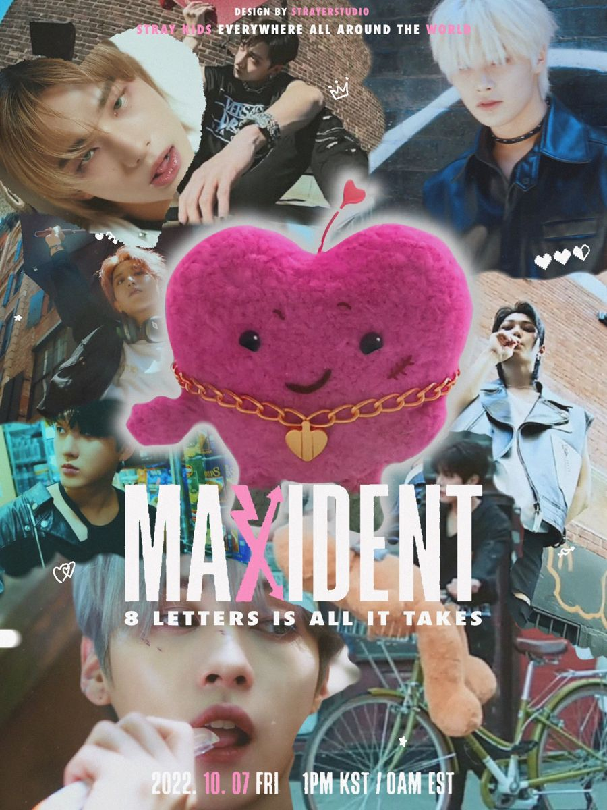
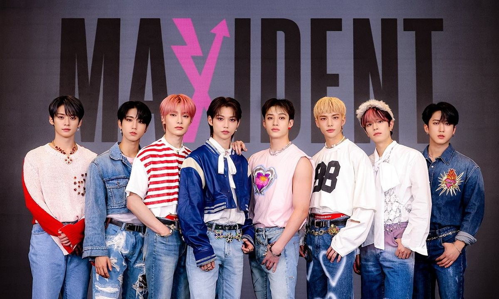

|
 |
Siete meses después de Oddinary, Stray Kids regresó el 7 de octubre de 2022 con Maxident, su séptimo mini álbum.
El nombre combina las palabras en inglés "max" (máximo) y "accident" (incidente), representando un gran
acontecimiento inesperado: el amor.
El sencillo principal, "Case 143", compara el enamoramiento con un caso por resolver, usando el código numérico 143 como referencia a la frase "te amo". El álbum se convirtió en su lanzamiento más vendido hasta ese momento y ganó el premio Álbum del Año en los Asian Artist Awards. |
| Fecha de lanzamiento | 7 de octubre de 2022 |
| Tipo | 7mo mini álbum |
| Sencillo principal | Case 143 |
| Premio | Álbum del Año - Asian Artist Awards |
